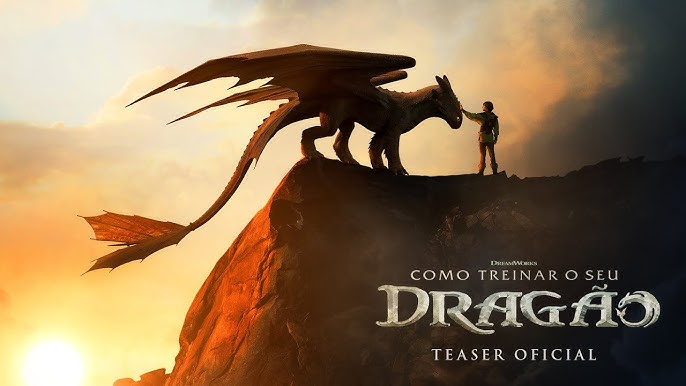
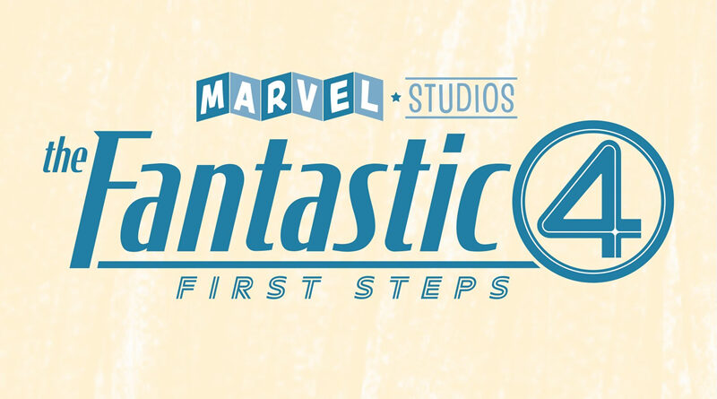
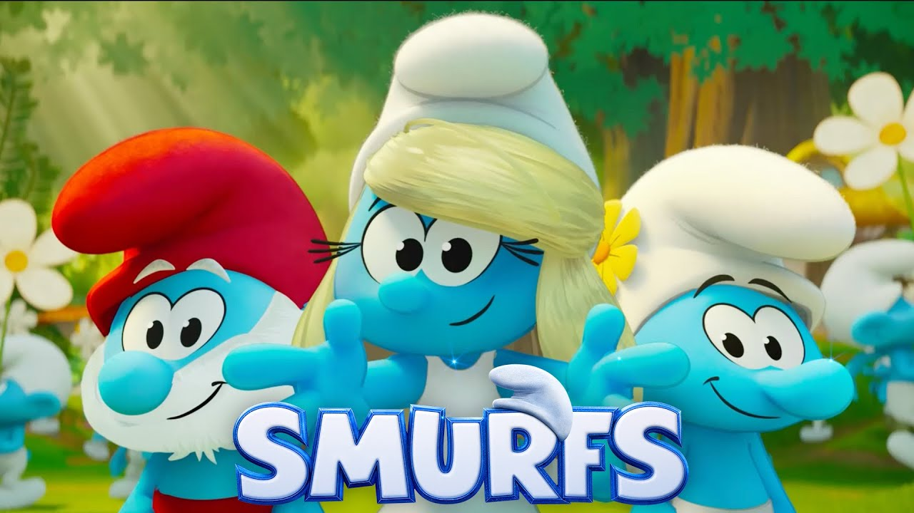

Superman 2025
Filme sobre um grande
Super heroi
Somente nos Cinemas



Superman (2025), escrito e dirigido por James Gunn, marca o início do novo Universo DC (DCU), estrelando David Corenswet como um jovem Clark Kent já atuando como repórter em Metrópolis e dando seus primeiros passos como Superman . No enredo, ele enfrenta as consequências de intervir em um conflito global arquitetado por Lex Luthor (Nicholas Hoult), que manipula a opinião pública por meio da tecnologia; Lois Lane (Rachel Brosnahan), Krypto, e aliados como Mister Terrific, Guy Gardner, Mulher‑Gavião e Metamorfo o ajudam a reconquistar a confiança da população e reafirmar seus valores de verdade, justiça e compaixão Com duração de cerca de 129 minutos (2h09), o filme foi bem recebido pela crítica e pelo público, com bilheteria global de mais de US$ 426 milhões e tom otimista, visual vibrante e performances elogiadas, embora alguns critiquem um ato final sobrecarregado e a subutilização do ambiente do Daily Planet
How to Train Your Dragon (2025) é um remake live‑action dirigido por Dean DeBlois—o mesmo por trás da trilogia animada—que traz Mason Thames como Hiccup e Gerard Butler reprisando o papel de Stoick, agora presencialmente. A trama segue fielmente a história original: um jovem viking excluído forma um laço inesperado com Toothless, um dragão Night Fury, desafiando a tradição de sua aldeia e conduzindo ao entendimento entre espécies. Nico Parker se destaca como Astrid, com mais agência e profundidade que na versão animada, enquanto o visual combina cenários imersivos, cenas aéreas espetaculares e dragões CGI realistas. A trilha sonora de John Powell revigorou temas clássicos da saga. Embora a crítica admire a fidelidade emocional e visual, muitos apontam que a adaptação se limita a recriar o original, sem inovação. A recepção foi geralmente positiva (76% no Rotten Tomatoes), com público dividido entre nostalgia e questionamentos sobre a necessidade do remake
The Fantastic Four: First Steps (2025) é o aguardado reboot do Quarteto Fantástico pela Marvel Studios, dirigido por Matt Shakman e com estreia em 25 de julho de 2025, marcando o início da Fase Seis do MCU. Ambientado em uma Terra alternativa retro-futurista dos anos 1960 (Terra‑828), a trama acompanha Reed Richards (Pedro Pascal), Sue Storm (Vanessa Kirby), Johnny Storm (Joseph Quinn) e Ben Grimm (Ebon Moss‑Bachrach) já estabelecidos como super-heróis — sem revisitar sua origem — enquanto enfrentam o devorador de planetas Galactus (Ralph Ineson) com a ajuda da Surfista Prateada, Shalla‑Bal (Julia Garner). Com estética inspirada na era espacial clássica e produção visual reminiscente de Kubrick, o filme aposta em cenários práticos e figurinos estilo anos 60, priorizando o drama familiar e atmosfera otimista. A crítica foi geralmente positiva (89 % no Rotten Tomatoes), destacando o tom nostálgico e o enfoque emocional, embora tenha havido críticas quanto à química entre os personagens e a escolha de um vilão tão cósmico logo no primeiro filme de fase. A estreia mundial arrecadou cerca de US$ 218–227 milhões, com abertura doméstica de US$ 118 milhões, se firmando como o primeiro grande sucesso da Marvel em 2025 e reacendendo o interesse no universo heróico da editora.
*Smurfs* (2025) é um filme musical animado dirigido por Chris Miller e estrelado por Rihanna como Smurfette, que também assina a produção e parte da trilha sonora. Na história, Papa Smurf é sequestrado pelos irmãos vilões Gargamel e Razamel, que buscam livros mágicos capazes de controlar o universo. Um Smurf sem nome ganha poderes após cantar no bosque e, junto com Smurfette e outros personagens, embarca em uma jornada por diferentes dimensões e países para salvá-lo. O filme mistura estilos variados de animação, incluindo stop-motion, 8-bit e crayon, com elementos de live-action, abordando temas como identidade, pertencimento e autodescoberta. Apesar da proposta visual ambiciosa, o filme recebeu críticas negativas, sendo considerado confuso e pouco atrativo para o público infantil, arrecadando apenas US\$ 37 milhões contra um orçamento de US\$ 58 milhões.
Jurassic World: Rebirth (2025) é o sétimo filme da franquia Jurassic Park e o quarto da série Jurassic World, dirigido por Gareth Edwards e com roteiro de David Koepp, autor do original de 1993 . Passado cinco anos após Jurassic World Dominion, a Terra tornou-se hostil aos dinossauros, que sobrevivem apenas em regiões equatoriais isoladas . O enredo acompanha Zora Bennett (Scarlett Johansson), uma agente de operações secretas, liderando uma missão para coletar amostras de DNA de três dos maiores dinossauros do planeta — um da terra, outro do mar e outro do ar — visando desenvolver um medicamento revolucionário contra doenças cardíacas . No caminho, a equipe cruza com uma família que acaba naufragando na mesma ilha proibida, recheada de dinossauros mutantes como o impressionante “Distortus rex” e os Mutadons voadores . O filme retorna às raízes do suspense visual inspirado nos clássicos de Spielberg, com cenas intensas de perseguição e sobrevivência, embora tenha sido criticado por falta de originalidade e personagens pouco desenvolvidos . Apesar das falhas, foi um sucesso de bilheteria, arrecadando mais de US$ 575 milhões mundialmente contra orçamento de US$ 180 milhões, com recepção mista por parte da crítica mas maior aprovação do público .